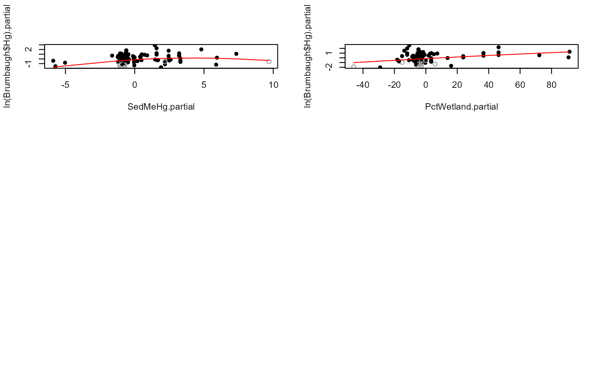

Draws a partial plot for each X variable in regression of a censored Y variable against multiple X variables.
partplots(
y.var,
cen.var,
x.vars,
LOG = TRUE,
smooth.method = "gam",
gam.method = "tp",
multiplot = TRUE,
printstat = TRUE
)The column of y (response variable) values plus detection limits.
The column of indicators, where 1 (or TRUE) indicates a detection limit in the y.var column, and 0 (or FALSE) indicates a detected value in y.var.
Multiple uncensored explanatory variable(s). See Details
Indicator of whether to compute the censored regression in the original y units, or on their logarithms. The default is to use the logarithms (LOG = TRUE). To compute in original Y units, specify the option LOG = FALSE (or LOG = 0).
Method for drawing a smooth on the partial plot. Options are c("gam", "none"). "gam" is a censored generalized additive model using the cenGAM and mgcv packages.
Method for computing the gam smooth. See the mgcv package for options. Default is a thinplate ("tp") spline. "cs" is another good option.
If TRUE, plots are drawn 6 per page. If FALSE, all plots are drawn on a separate page.
Logical TRUE/FALSE option of whether to print the resulting statistics in the console window, or not. Default is TRUE.
When x.vars is one variable, a message is printed that partial plots are not possible with only one X variable and execution stops.
When x.vars is a data frame of more than one variable, partial plots are drawn for each X variable and text is printed comparing AICs for regression using the untransformed X variable with log and cube-root transforms of the X variable, as a supplement to evaluating linearity on the partial plots alone.
Partial plots for uncensored data often are drawn with superimposed smooths. At times looking only at the data values without a smooth can better enable the human eye to determine whether the overall pattern is linear or not. If this is the best method for you, use the smooth.method = "none" option to not draw a smooth. The most common smooth used for uncensored data is loess, which does not recognize censored data and so uses the detection limit (DL) value itself. This results in biased-high smooths that incorrectly treat values at the DLs equal to uncensored (detected) data. The partplots function in NADA2 was written to provide a better alternative, smoothing the partial residual pattern with a censored generalized additive model (gam). The censored gam recognizes the nondetects as left-censored data with a maximum at the DL when computing the smooth. DLs may vary with each observation -- multiple DLs in a dataset are not a problem in routines of the NADA2 package.
'y.var': The default is that the Y variable will be log transformed.
x.vars: Enter the name of a data frame of columns of the x variables. No extra columns unused in the regression allowed. Create this by x.frame <- data.frame (Temp, Flow, Time) for 3 variables (temperature, flow and time).
Gray open circles represent censored data and are the residual between the detection limit and the predicted value from the censored regression. The GAM recognizes that the detection limit is an upper limit, predicted values on the regression line are most often below the detection limit, leading to positive residuals. Note that the true residual for censored data could be anywhere below the plotted value. That fact is recognized by the censored GAM but is difficult to represent on a plot.
AIC for regression models with un-transformed X, log and cube-root transforms of X are printed to evaluate which of the three transformations results in the ‘best’ model.
Helsel, D.R., 2011. Statistics for censored environmental data using Minitab and R, 2nd ed. John Wiley & Sons, USA, N.J.
Cook, R.D., 1993. Exploring Partial Residual Plots, Technometrics 35, 351-362.
data(Brumbaugh)
# For demostration purposes
partplots (Brumbaugh$Hg,Brumbaugh$HgCen,Brumbaugh[,c("SedMeHg","PctWetland")])
#> SedMeHg
#> untransformed
#> Likelihood R2 = 0.1371 AIC = 359.1937
#> cube root
#> Likelihood R2 = 0.1466 AIC = 357.7191
#> log transform
#> Likelihood R2 = 0.1491 AIC = 357.3184
#> Decrease in AIC from transformation of SedMeHg = 1.875304
#>

#> PctWetland
#> untransformed
#> Likelihood R2 = 0.1371 AIC = 359.1937
#> cube root
#> Likelihood R2 = 0.1289 AIC = 360.4434
#> log transform
#> Cannot take logs of zero or negative values.
#> Decrease in AIC from transformation of PctWetland = 0
#>